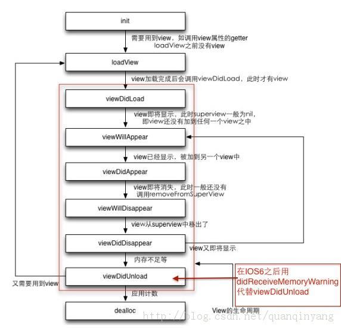
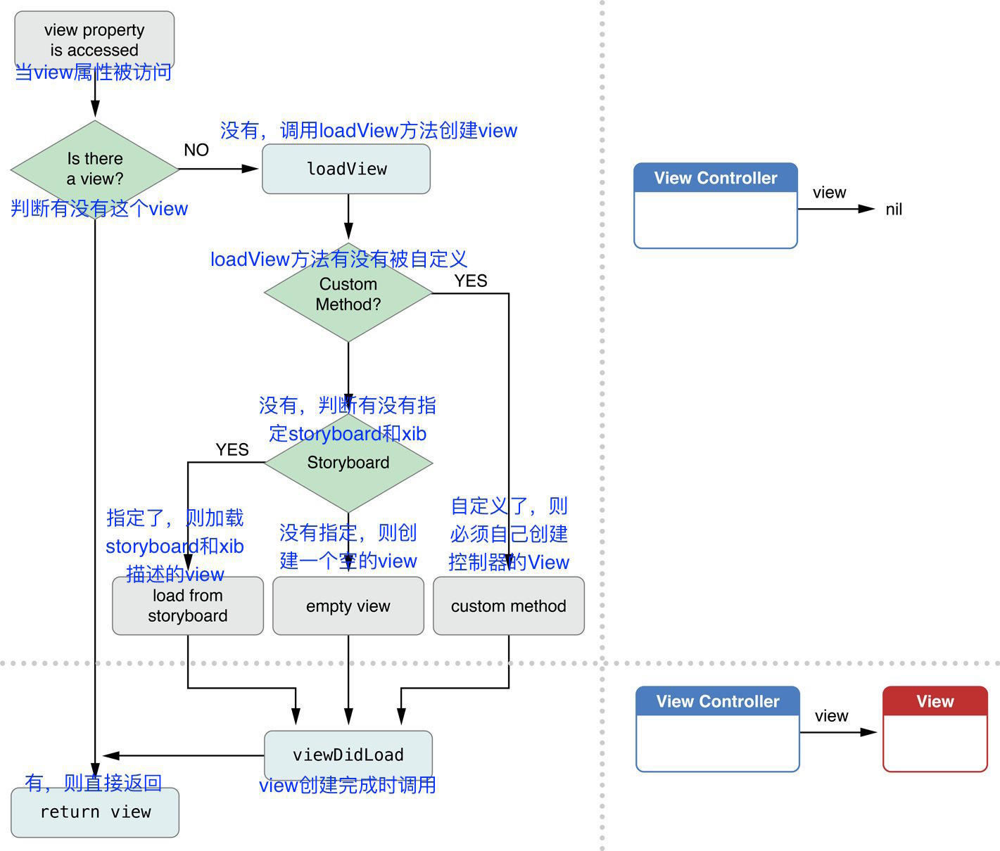
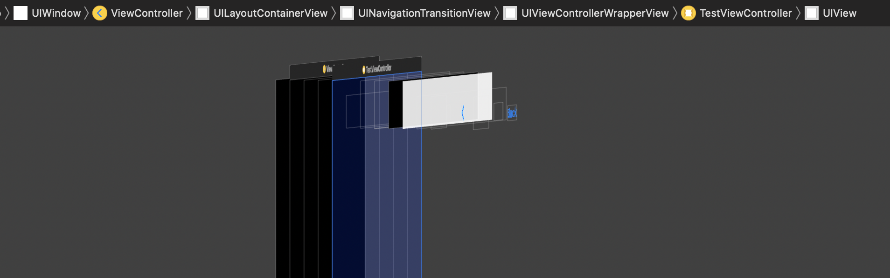
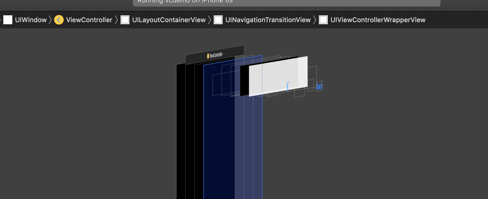

UIViewController（视图控制器），顾名思义，是 MVC 设计模式中的控制器部分。UIViewController 在 UIKit 中主要功能是用于控制画面的切换，其中的 view 属性（UIView 类型）管理整个画面的外观。
UIViewController生命周期
用网上拿来的一张图：

ViewController 生命周期的第一步是初始化。不过具体调用的方法还有所不同。如果使用 StoryBoard 来创建 ViewController，我们不需要显式地去初始化，Storyboard 会自动使用 initWithCoder: 进行初始化。如果不使用 StoryBoard，我们可以使用 init: 函数进行初始化，init: 函数在实现过程中还会调用 initWithNibName:bundle:。
尽量避免在 VC 外部调用
initWithNibName:bundle:，而是把它放在 VC 的内部（参考这里）。
初始化完成后，VC 的生命周期会经过下面几个函数：
(void)loadView
此时，控制器的 view 还未初始化，可以通过重写这个方法自定义控制器的 View，如果这样做，那就不能调用
[super loadView]（上面代码调用是为了方便打印，不然屏幕就是黑的）。(void)viewDidLoad
在控制器的生命周期中，它只会被调用一次，此时，view 已经初始化好，非常适合做一些页面的初始化任务。由于此时 view 的 bounds 尚未确定，所以不适合写 frame 类型的布局代码，但是给视图添加约束没有影响。
(void)viewWillAppear
它会在控制器的视图将要出现在屏幕中时被调用，在控制器生命周期中可能会被调用多次。在此处，适合做一些与视图出现相关联的任务，例如改变状态栏的方向、风格。
(void)viewWillLayoutSubviews
当 view 的子视图即将布局时，此方法会被调用，触发的条件是：
- view 被添加到视图层次中
- view 的 bounds 发生了改变
- 调用了
- setNeedsLayout方法 - 调用了
- layoutIfNeeded方法
这个方法是写 frame 布局代码的好地方，将 view 的子视图布局好，每次 view 大小发生改变时，其子视图布局也会相应改变。
(void)viewDidLayoutSubviews
当 view 的子视图已经布局时，此方法会被调用，触发条件同上。
(void)viewDidAppear
它会在控制器的视图出现在屏幕后被调用，此时，view 的 bounds 已经确定，不过在这里写布局相关代码，可能会反映到屏幕上。
(void)viewWillDisappear
视图即将从屏幕中消失时触发。
(void)viewDidDisappear
视图从屏幕中消失后触发。
代码测试一下：
1 | - (void)loadView |
运行结果：
1 | Demo[3268:99911] loadView |
这是单个控制器情况下，我们在假设现在有一个 AViewController(简称 Avc) 和 BViewController (简称 Bvc)，通过 navigationController 的 push 实现 Avc 到 Bvc 的跳转，下面是各个方法的执行执行顺序：
1 | A viewDidLoad |
如果再从 Bvc 跳回 Avc，会产生下面的执行顺序：
1 | B viewWillDisappear |
可见 viewDidLoad 只会调用一次，再第二次跳回 Avc 的时候，AViewController 仍然存在于内存中，也就不需要 load 了。
注意上面的生命周期中都没有提到有关 ViewController 销毁的内容，在 iOS 4 & 5 中 ViewController 中有一个 viewDidUnload 方法。当内存不足，应用收到 Memory warning 时，系统会自动调用当前没在界面上的 ViewController 的 viewDidUnload方法。 通常情况下，这些未显示在界面上的 ViewController 是 UINavigationController Push 栈中未在栈顶的 ViewController，以及 UITabBarViewController 中未显示的子 ViewController。这些 View Controller 都会在 Memory Warning 事件发生时，被系统自动调用 viewDidUnload方法。
从 iOS 6 开始，viewDidUnload 方法被废弃掉了，应用受到 memory warning 时也不会再调用 viewDidUnload 方法。我们可以通过重载
- (void)didReceiveMemoryWarning和-(void)dealloc来进行清理工作。
控制器 View 的创建和生命周期

图中控制器view的加载过程中有两个很重要的方法：一个是loadView，另外一个是viewDidLoad。
loadView方法
作用：loadView方法是用来负责创建UIViewController的view。
首先判断下有没有指定storyboard或者xib,如果指定,就会加载它们描述的控制器的view,如果没有指定,创建一个空的view。
什么时候调用：每次访问UIViewController的view，当view为nil，就会调用loadView方法。
viewDidLoad
作用：一般我们会在这里做界面上的初始化操作，比如往view中添加一些子视图等。
什么时候调用：每当view创建完毕的时候，最终都会调用viewDidLoad方法。
- 通过storyboard创建的控制器，或者通过xib创建的控制器的view，系统会帮我们加载控制器的view，具体内部实现可以看iOS-UIWindow详解，在此不在赘述
ViewController *vc = [[ViewController alloc]init];
底层也会调用-(instancetype)initWithNibName:(NSString *)nibNameOrNil bundle:(NSBundle *)nibBundleOrNil方法。
(1).判断下有没有指定nibName,如果指定了,就会去加载指定的xib
(2).如果没有指定,就会判断下有没有跟控制器类名同名的xib,有,就会去加载
(3).判断下有没有跟控制器类名同名的xib,但是后缀不带Controller的xib,如果有,就会去加载
(4).如果没有任何xib描述控制器的view,就不会加载xib。会创建一个颜色为clearColor的view。
控制器view加载的几种方式
通过storyboard加载
当控制器通过storyboard加载时，需要指定storyboard的名称，控制器view最终就是storyboard所描述的样子，这个比较简单，不做详细阐述
1 | - (void)touchesBegan:(NSSet<UITouch *> *)touches withEvent:(UIEvent *)event{ |
要记住在 attributes inspector中将 Is Initial View Controller选项勾上
通过xib加载
当控制器view通过xib加载的时候，可能会出现三种情况
1、指定xib名称
1 | - (void)touchesBegan:(NSSet<UITouch *> *)touches withEvent:(UIEvent *)event{ |
当我们指定了xib的名称，loadView方法就会去加载对应的xib
2、不指定xib名称
1 | - (void)touchesBegan:(NSSet<UITouch *> *)touches withEvent:(UIEvent *)event{ |
当没有指定xib名称，分两种情况：如果有控制器同名的xib则加载，例如TestViewController会加载TestViewController.xib。如果没有与控制器同名的xib文件时，会加载前缀与控制器名相同而不带controller的xib（TestView.xib）
3、不通过sb\xib加载
把xib和sb文件都删除掉，什么都不加载。则会默认创建一个UIView，虽然显示为黑色，但其实该颜色是UIWindow的。

4、重写loadView方法
重写控制器的loadView方法:
1 | - (void)loadView{ |
控制器view加载出来的时候就是我们设置的UIImageView。如果重写该方法里面什么也不写，和不通过sb\xib加载方式的运行结果相同。不过两者区别是这种方式并没有创建UIView。

结论：
- 重写loadView方法，则会根据重写的loadView方法创建view
- 控制器通过storyboard加载，则根据storyboard的描述创建view
- 控制器view通过xib加载，则根据nibName对应的xib创建view
- 没有指定nibName，则根据与控制器同名的xib创建view
- 没有同名的xib，则根据与控制器名前缀相同不带controller的xib创建view
- 如果都没有，则创建一个空白的xib
- storyboard加载的是控制器及控制器view，而xib加载的仅仅只是控制器的view
参考资料
https://hit-alibaba.github.io/interview/iOS/Cocoa-Touch/UIViewController.html
http://blog.devtang.com/blog/2013/05/18/goodbye-viewdidunload/